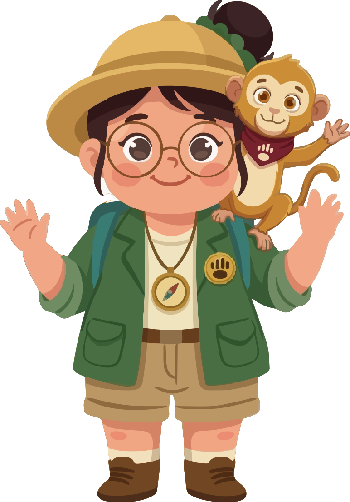
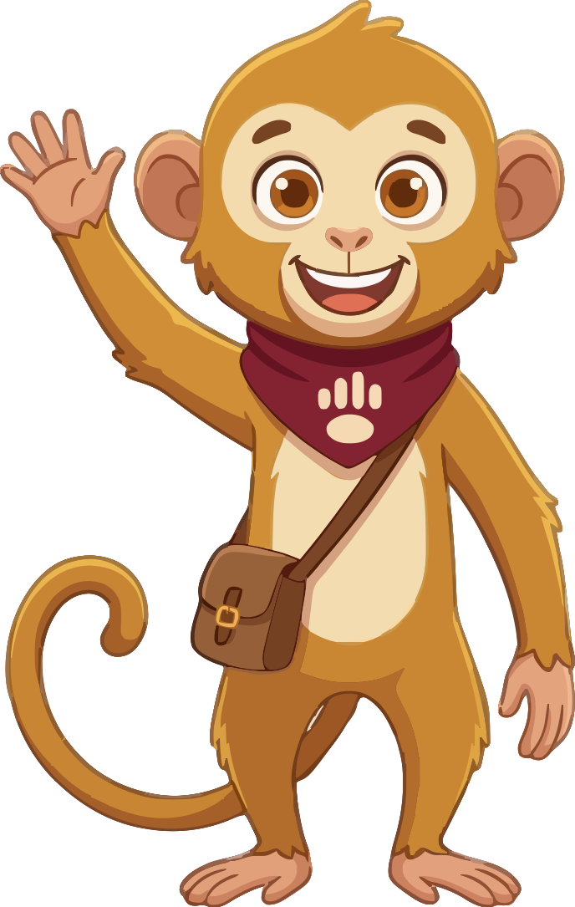
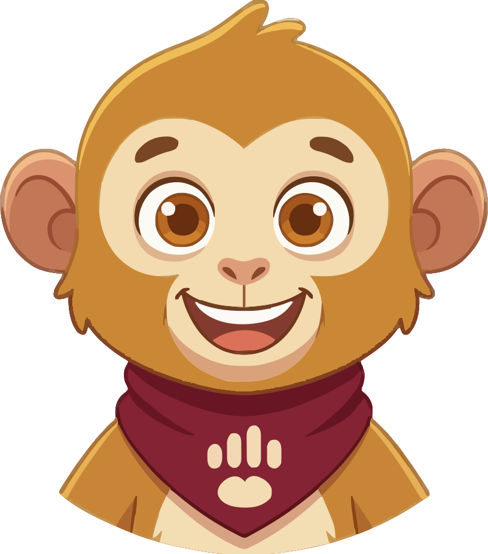
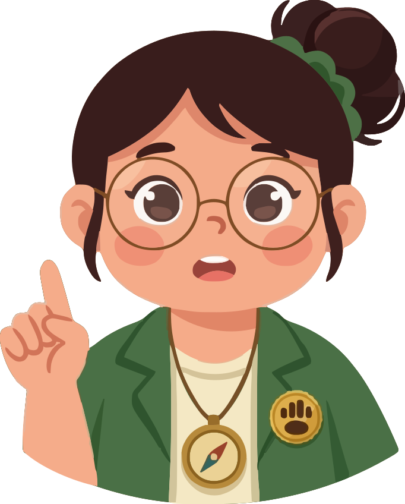
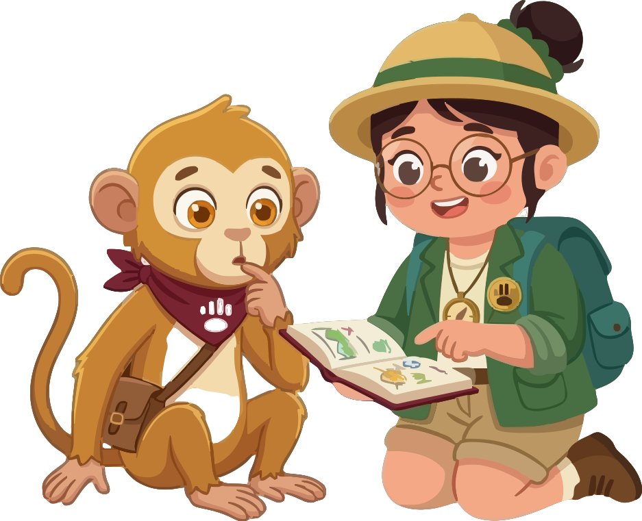

Kombinasi Kontainer 3D Clay Empuk dengan 100% Grafis Flat Vector Nusa & Mira (Editorial Quality)

Simpan progres belajar, streak, dan AI tutor agar tersinkron di semua perangkatmu.




"She _____ to the library every Wednesday afternoon."